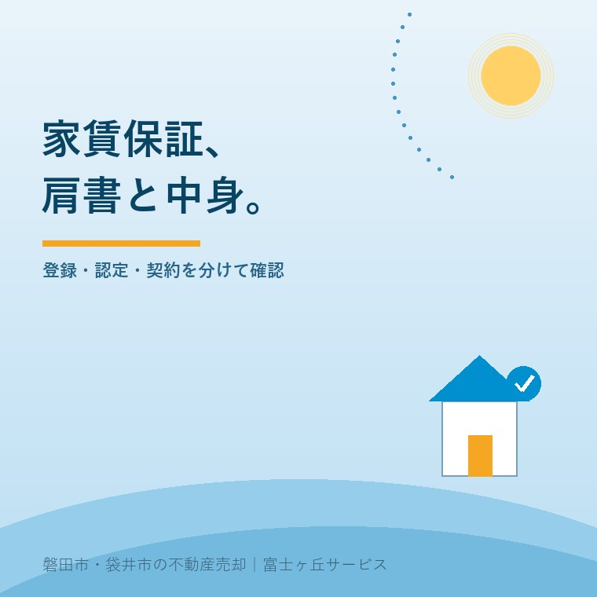
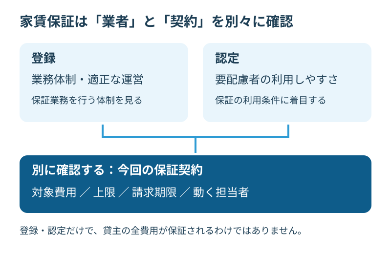

空き家の家賃保証、登録と認定の2つの違い
2026年9月30日｜カテゴリ：空き家・施設入居

この記事の要点
認定された保証会社なら、実家を貸しても費用の心配はない？
家賃債務保証の登録は業務の適正な実施、認定は住宅確保要配慮者の利用しやすさに着目した制度です。貸主の全費用を保証する印ではありません。対象費用・上限・請求条件を契約書で確認します。磐田市・袋井市・森町では、介護施設の運営から不動産事業を始めた富士ヶ丘サービスのような地域密着の会社に、資料整理から相談する選択肢があります。
大石浩之（磐田市／不動産業）です。親が施設へ入り、空いた実家を貸す。家賃を介護費用の一部に充てたいご家族にとって、滞納への備えは切実です。ただ、「国の認定があります」という説明だけで収支表を完成させるのは早すぎます。
2025年10月1日に始まった認定制度は、2026年10月1日で開始から1年になります。この記事は2026年9月30日確認の公式情報を基に、保証業者の資格表示と、その家で使う保証契約の中身を分けて読みます。
登録と認定は、見る基準が違う
国土交通省の貸主・管理会社向けリーフレットでは、登録家賃債務保証業者制度と認定家賃債務保証業者制度が区別されています。家賃債務保証とは、借主が負う家賃などの債務を、契約に沿って保証する仕組みです。
登録制度は2017年10月に創設されました。業務体制や適正な業務のためのルールなど、一定の要件を満たす保証業者を登録します。認定制度は、住宅確保要配慮者が利用しやすい保証業者を、一定の基準により認定するものです。
住宅確保要配慮者とは、低額所得者や高齢者など、住まいの確保に配慮が必要な方です。親の家が空いたという事情だけで、借り手側の条件や住宅側の制度利用まで決まるわけではありません。
| 確認する表示 | 主な着眼点 | 別に読むもの |
|---|---|---|
| 登録 | 保証業務を適正・確実に行う体制など | 今回の保証商品と契約条件 |
| 認定 | 住宅確保要配慮者の利用しやすさ | 対象の借主・住宅と保証の範囲 |
認定基準には、居住サポート住宅に入る要配慮者の保証を正当な理由なく断らないことなどがあります。要配慮者との契約条件として、緊急連絡先を親族などの個人だけに限らず、家賃債務の保証人の設定を求めないことも示されています。「誰でも無条件で通る」という意味には読み替えません。
私は、親族の保証人を用意しにくい方にも道が開く点を評価します。貸主にとっても、借り手の事情と利用できる制度を整理しやすくなります。住宅側の仕組みは居住サポート住宅の確認事項と分けて読むと混乱しません。

保証範囲は会社名でなく契約で読む
家賃債務保証の登録・認定は、貸主のすべての出費を国が補塡する印ではありません。国土交通省の制度説明を確認した後は、管理会社から今回使う商品の約款と説明資料を受け取り、対象費用を照合します。
その上で私が注文したいのは、「保証が付くので安心です」で説明を止めないことです。保証会社の肩書だけでは、親の家に残る負担は分からない。貸主が知りたいのは、滞納が起きた翌月に、誰からいくら入り、自分は何をするかです。
確認表には、家賃、共益費・管理費、原状回復、残置物撤去、訴訟費用を別々に書きます。各欄に対象かどうか、上限、対象期間、請求に必要な書類、連絡期限を入れる。空欄を担当者への質問にすれば、広告の短い説明に頼らず比較できます。
保証の支払いと現場の作業も別です。片付け費用が保証対象でも、家財を処分する権限まで手に入るわけではありません。残置物のモデル契約と事前準備も確認し、死亡時の連絡役、契約の終了、家財の扱いを切り分けます。相続や契約の個別判断は専門家に確認を。
私なら、滞納時の連絡を家族がするのか、管理会社がするのかも書面に残します。担当のつもりが食い違うと、必要な報告が遅れるおそれがあります。これは本記事で提案する確認手順で、特定の保証会社に事故があったという話ではありません。
35％は財団の掲載条件。家計にはどう響くか
高齢者住宅財団の制度概要には、登録番号と認定番号が別々に記載されています。認定年月日は2025年10月1日です。同資料は、滞納家賃に共益費・管理費を含み、原状回復費用に残置物撤去を含むこと、訴訟費用も対象とすることを示しています。
同資料にある保証料は、2年間の保証の場合、月額家賃の35％です。これは財団の掲載条件であり、全保証業者共通の料金でも、今回の申込みで必ず使える見積額でもありません。資料自体の公表日は本文から確定できないため、認定日と同じ日として紹介しません。
仮に月額家賃6万円に35％を掛ける条件なら、計算上は2万1,000円です。6万円も、この計算も説明用の例です。実際の保証料の算定対象、支払う人、更新時の費用は、申込み先に確認します。貸主が払うと決まっていない費用を、先回りして家計に載せないためです。
貸主の収支には、保証料と別に、修繕、空室中の維持、募集や管理に関わる費用が残り得ます。保証の対象外を一行ずつ分ければ、家賃が入る前の持ち出しと、入居後の負担が見えます。保証を使うことは、家の不具合を直さなくてよくなることではありません。
私は、保証料が安いという理由だけで選ぶかには迷いがあります。対象が広くても請求の手間を家族が負えなければ続かない。一方で、使わない範囲まで付ければ費用は増えます。家族が管理できる範囲と契約条件を並べるまで、どの商品が合うかは決められません。
磐田・袋井で貸す前に家族がそろえる資料
磐田市・袋井市の実家を貸す準備では、保証制度の確認と、建物を賃貸に出せる状態かの確認を並行させます。全国の制度であっても、地元のその家にその商品が使えるかは、保証会社や取扱い管理会社への確認が必要です。
私の提案は、家族の連絡窓口を一人決め、物件資料、家賃の試算、保証の説明資料を一つの束にすることです。親の施設費用を管理する人と、家の修繕を頼む人が別なら、支出を承認する順序もそろえます。施設入居と貸付けの判断権限は別に確認します。
| 手元に置く資料 | 管理会社へ聞く内容 |
|---|---|
| 家と設備の現況メモ | 募集前に必要な修繕と見積り |
| 保証商品の説明・約款 | 対象費用、上限、請求担当と期限 |
| 家族の支出予定 | 家賃が入らない期間の資金の置き方 |
遠方の家族が磐田へ来られる日を、保証の書類提出日と同じにする必要はありません。写真で確認できる資料は先に送り、現地では設備や鍵の確認に時間を使う。これは訪問を一度で済ませる保証ではなく、再訪問の原因を減らす段取りです。
貸す選択そのものは、実家を貸す前に考える条件で整理できます。家賃債務保証を付けられるから貸す、という順番にはしません。親の意向、家の状態、手元資金を確認してから判断します。
私は保証外の負担から貸すかを考える
実家の賃貸を検討する家族が今日できる確認は、保証会社の番号と保証対象の表を一緒に取り寄せることです。番号だけの資料なら、契約条件が欠けています。費用だけの比較表なら、どの会社のどの商品かを補います。
私はこう考えます。保証があることより、保証されない部分を家族が引き受けられるかが先です。全部の不安が消える日は来なくても、負担の置き場所が分かれば、貸す・待つ・売るを落ち着いて比べられます。
- 登録・認定と、商品名・契約条件を分ける。
- 保証外の費用と、滞納時に動く担当者を書く。
- 回答がそろうまでは、収支を確定しない。
よくある質問
実家と家族の判断に関する疑問を整理します。
- 登録と認定は、どちらか一つだけですか？
- 登録と認定は基準の着眼点が異なり、同じ事業者が両方を受ける場合があります。高齢者住宅財団の資料にも登録番号と認定番号が別々に載っています。登録は業務体制など、認定は住宅確保要配慮者の利用しやすさを確認する手掛かりです。保証の対象や上限は番号から決めず、今回申し込む商品の契約条件を確認してください。
- 認定業者なら、空室の間も家賃が入りますか？
- 登録・認定という表示だけで、借り手がいない期間の家賃収入まで保証されるとは判断できません。この記事で扱う家賃債務保証は、借主の家賃などの債務を契約条件に沿って保証するものです。空室時の収入保証や一括借上げとは分けて確認します。貸主へいつ何が支払われるかを管理会社と保証会社に尋ねてください。
- 原状回復費と残置物の片付けも任せられますか？
- 高齢者住宅財団の掲載例には原状回復費用、残置物の撤去、訴訟費用が含まれます。ただし、すべての会社・商品で同じ範囲とは限りません。支払い対象と作業を頼む相手、上限、請求期限を別々に確認します。費用の保証があっても自由に家財を処分できるとは考えず、契約や相続に関わる個別判断は専門家に確認を。

この記事を書いた人：大石浩之（磐田市／不動産業・宅地建物取引士）
富士ヶ丘サービス株式会社。介護施設の運営から不動産事業を始め、磐田市・袋井市・森町で、介護と相続、実家の売却を一体で相談できる窓口を設けています。家族が困らない売却のため、資料と現地の条件を一件ずつ整理します。著者プロフィール
本記事は2026年9月30日時点の公開情報と筆者の意見です。制度・数値・手続き・契約条件は変更されることがあります。税務・登記・相続・契約などの個別判断は、税理士・司法書士・弁護士などの専門家に確認を。